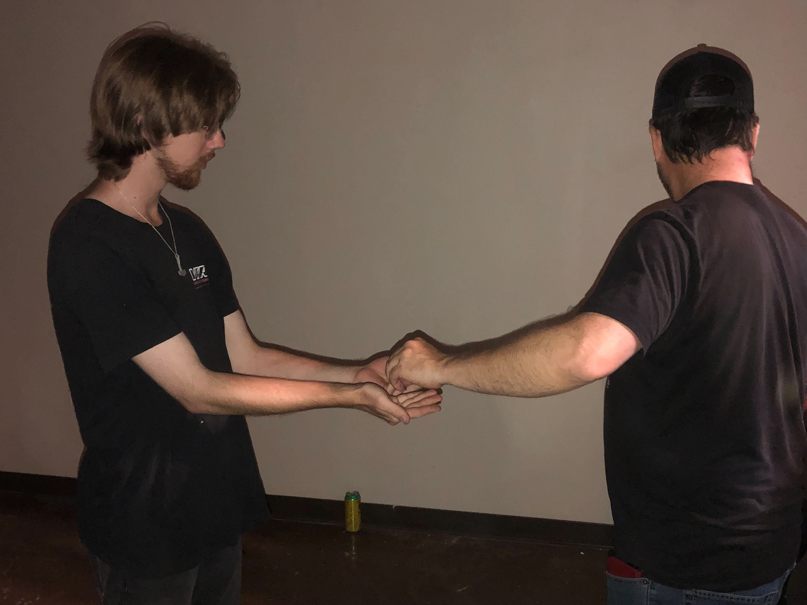
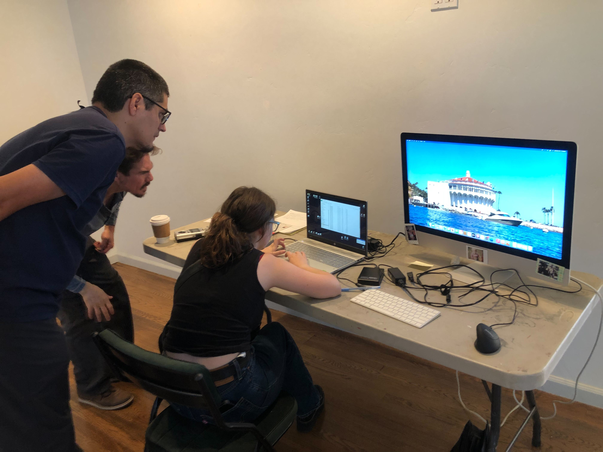

A Sit Down With the Master of Horror
December 2026

He breaks off to yell at his dog. "Sunny sit, sit! You bitch, sit!"
"Nothing elevated about horror," he says. "Horror is low. Low is the whole point. A24 is a travel brochure. My crew would rather bleed than bill hours. They are building a movie, not a reel."

He changes subjects again and again without coherence. Speaking like his movie making style.
"Call them at 2am and tell them to meet you at a Walmart in twenty minutes," he says. "If they ask why, you do not want them. If they show up with a flashlight, you keep them forever."
"Constraint is a form. Takes the excuse out. You either shoot or you drown."
"Anyways, this is cool, love what you are doing here."
Then he hangs up.
— SD
Shane Campbell is the writer-director behind Fat Happy Baby Productions. Ten shorts, five years, no finals. Last month he returned from the To Cannes 48 in a witch costume and a Walmart bag full of sheets. For a week Sean Dog had been trying to reach him for a follow-up on advice to new filmmakers. He picked up at 1pm on a Thursday, groggy, and did not seem to know he had agreed to talk.
"Hello, what do you want," he says after answering on the fourth ring. "A follow-up interview," Sean Dog says.
"What," he says, his voice groggy, as if he just woke up, then before a question, starts speaking about tripods. "You know when a movie has been made with the biggest, most expensive tripod," he says. "The frame does not move. Thats a portrait, not a movie."
"You know nice things are super boring," he continues with that stream of consciousness of a genius.
Then, back to tripods.
"FHBP only puts the camera on the tripod when it absolutely needs to, and that is when its lunch time, and you got to put the camera down to eat."
"All gass no breaks!"
"Chain Saw Massacre, Evil Dead, they didnt have a tripod."
"Horror isnt about a perfect pixel image," he says. "Thats for the DP's portfolio. FHBP is about making movies, not reels."

"Blair Whitch didn't have a tripod, I garauntee you. You came out of that movie and you just wanted to puke. Like a bad roller coaster."
He speaks with the genius of stream of consciousness, pivoting on the spot to a new topic.
"There are three layers to horror," he says. "Terror on top, what you cannot see. Horror in the middle, what is in the room. Gross-out on the floor, what is leaking under the door. Most films stop at the floor."